How I Designed My Studio Kitchen
I have hinted a little bit here on the site that we have been busy with a studio kitchen remodel. The private Nouveauraw Facebook Group has been following the progress as I have been sharing regular updates over there. The other day, I received several comments asking me how I went about designing my studio kitchen space. I started to share over on Facebook, but it was getting so long that I decided to also share my experience and discoveries here on the site. You will soon see why… I have a LOT to share. Hehe Also, many of you don’t do Facebook and be interested in this topic as well.
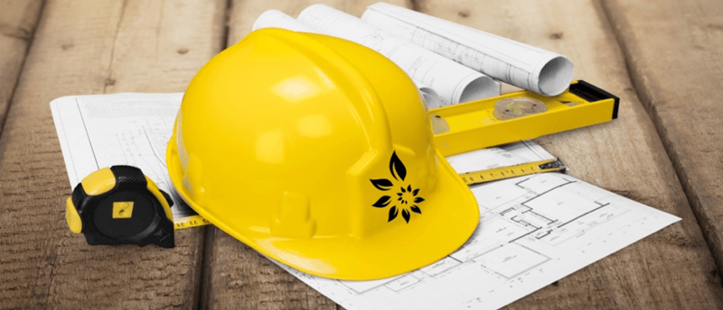
It’s good to note that you can use the suggestions below as a design approach for any space in your house. I am merely sharing with you how I approach design and decor. Kitchen designing isn’t my profession… but working in one is… and I am excited to share my thoughts with you. It’s also important to know that the space I designed is suited for my particular needs, which will undoubtedly look different for you. That’s ok; the same principles can be applied to your situation. I should also note that my studio kitchen isn’t finished yet. We still have one wall to complete, but we had to take some time off to deal with other life commitments. So, let me tell you a bit about the studio kitchen that I have designed; then, I will break my approach down below.
I have been creating this Studio Kitchen with the help and support of my loving husband, Bob. We have done 100% of the work. This space is 656 square feet. It was once a two-car garage, converted to a commercial kitchen for food manufacturing, and is now taking on a life as a Studio Kitchen. During the build-out, Bob had a vision, and the phrase “The Room of Possibilities” departed from his lips. It is so true… the whole purpose for this space is to CREATE, to let INSPIRATION run wild, and to fuel the passion that is deep within me and for those who enter it.
I strongly believe that…
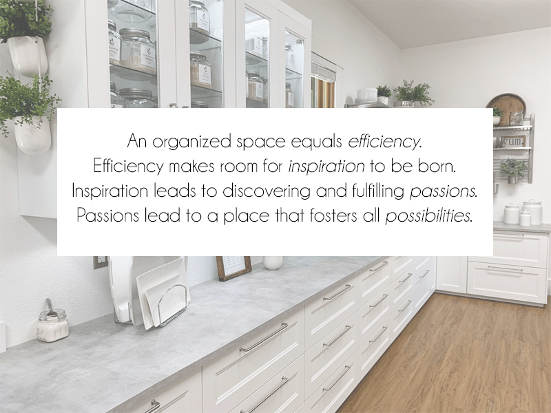
Functions for My Studio Kitchen:
- Art – of ALL mediums, food being a huge one. I love to sew, paint, build, you name it, and I wanted a combined space for all of it. When it comes to creating recipes and their presentation, I think outside of the box. A quick example, a painting stencil that can inspire me to create a design in my agar cheese molds.
- Recipe development – my job and passion.
- Catering – Bob and I love to host social gatherings big and small. I always make all the food from scratch for these events. I love secretly loading people with nutrients as they munch away on delicious food.
- Teaching – I would love to get back into teaching hands-on classes. I haven’t done a lot in the past but enough to show me the value of getting people’s hands involved with a bowl of ingredients.
- Videos – One day, it’s my dream to create videos for my food recipes.
- Photography – I love taking pictures of all my food creations. This requires enough equipment, props, etc. to warrant a special section for storing these items.
- A place to collaborate – When two or more come together… mountains can be moved! Visions are discovered, talents are born, passions are nourished, and best of all… lives are bound together!
The Over-all Feeling I Desired
- I wanted this space to leave an impression. Not only on others but primarily on myself. This is my safe place, my playground, an extension of my personal haven.
- Open, airy, inviting, and warming. I want it all! lol
- Clean and positive energy. I crave to be surrounded by a positive atmosphere. I do my best to purge all negativity from my life, whether that be people, objects, or my surroundings in general. I am a compassionate and empathetic person, this requires me to place a strong force shield around myself so that I can remain true to my ethics, beliefs, and growth.
- Balanced. A balanced space helps a person feel more grounded and confident. So in ALL my decorating, even down to my food compositions for photography… I use the symmetrical balance of objects and colors. Due to my ample space, I wanted the room to feel balanced in weight and color. This lead to me strategically placing each cabinet, countertop, shelving display, appliance, plant, and pops in color in such a way that as your eyes either scan the room or even if you stand still and let your peripheral vision float throughout the space… the room would feel balanced and grounded. I use this same approach in ALL my decorating.
My Choice of Color and Materials
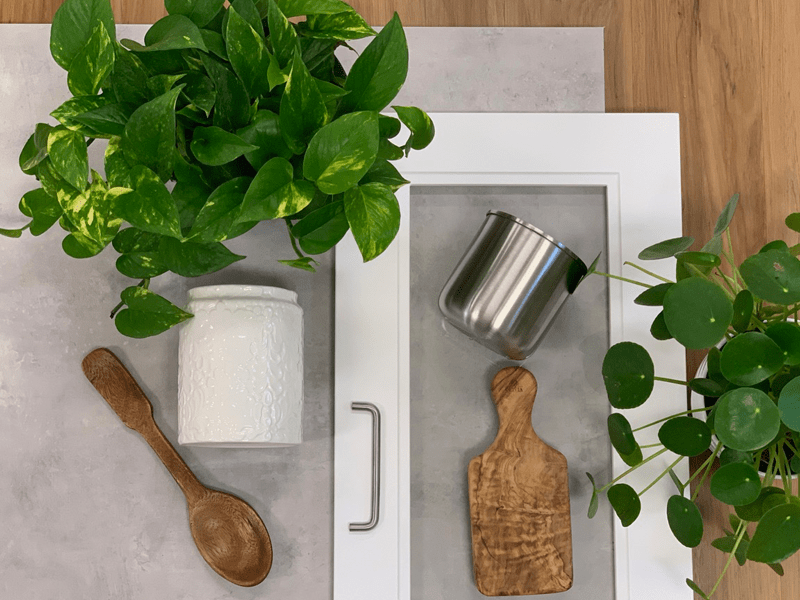
I named my style Industrial Farmhouse. I pulled together different colors and textures to create a sample board of the overall feel that I was aiming for. This gave me a visual, which also helped me stay on track with my plan. Trust me, bright shiny objects will come your way, and when they do, you need something to keep you focused. Let me explain what and why I selected these for my design. That’s not to say that as you build,/decorate a space that things won’t change. We’ve had two design changes along the way, but we made sure to think it through before activating them.
When it comes to decorating, I tend to use the repetition of items, materials, and colors. This means that I tend to repeat a pattern, color, texture, line, or any other element to help relax the eye when a person enters a space that I have laid out. As you read through my color choices and the materials I selected… see if you can get the “feeling” that I was aiming for as you look through the photos I have attached throughout this post.
Colors
- White – crisp, clean, timeless.
- Cabinets, dishware, accent pieces.
- Stainless (silver) – industrial, serious, timeless.
- Dishware, hardware, sink, workstation.
- Browns, tans = wood – warm, inviting, homey, relaxing, timeless.
- Flooring, ceiling fan, cutting boards, accent pieces.
- Green – soothing, healing, growth, harmony, freshness, safety, fertility, environment, and nurturing. Because it strongly represents nature, I consider it a neutral color that compliments other accent colors.
- Real plants; they help improve air quality by oxygenating the air, helps reduce carbon dioxide levels and can increase humidity. Indoor plants play a vital role in providing a pleasant and tranquil environment in which to move, work, or relax.
- Artificial plants; Artificial plants are suitable for high places that are too hard to reach for watering and/or don’t receive enough light to sustain the growth of a plant and are great for those who lead hectic lives and don’t want to risk killing live plants. We must choose our “battles.”
My Choice of Material / Texture
- Stainless – has a natural coating that prevents oxidation and is, therefore, non-corrosive. It is easy to clean and does not succumb to damage from exposure to water or cleaning agents. It also does not absorb bacteria and is considered a very hygienic material. Using stainless steel components is environmentally responsible since steel is nearly a hundred percent recyclable material.
- Wood – is an excellent material for adding warmth to spaces by making it feel cozy and welcoming. Regardless of the natural coloring of the wood, it can be mixed and matched; dark and light woods play well together. It kind of breaks the rules of everything needing to be just one style. Wood can be modern, contemporary, country, farmhouse, rustic, antique, old, and new. Regardless, it works in ANY application and is helpful to use to balance an infusion of design styles.
- Plants – I have included plants as a material. They are freeform flowing and come in all shapes and sizes. They are perfect for helping to fill voids, adds softness to harsh lines, and represent life, which invites pockets of energy to the room.
Organization equals Functionality
We all lead busy lives, and there are times when we have to pick and choose where we want to dedicate our energy. Is endlessly searching for an item or ingredient in your kitchen a way that you want to spend that energy? To reduce the time spent looking for objects, we need to implement an organization. Remember me mentioning that it’s essential to know how you want to use your space? Once you know this, you can better organize it. So grouping like-items or task-driven items is crucial, and there are so many organizational tools that will help you achieve this.
My Selection of Cabinets, Drawers, Open Shelving, Countertops, Flooring
In kitchens, you typically see cabinets and drawers being used to store your goods. Cabinets on the bottom, topped with a few drawers, and cabinets above with shelves. They are the norm of kitchen design, but how and where we use them can be a game-changer. This day and age, there are more creative options. Here is a link to IKEA’s kitchen cabinets and drawers, which I will be talking more about later.
Lower Cabinets
When I designed my studio kitchen, I decided that drawers for all lower cabinets were going to benefit me the most. No more losing items in deep dark cabinets where spiders and who-knows-what-else lives. And boy, was I right. I am still in awe of this decision. I could select anywhere from two to six drawers per cabinet. This is when my inventory list of what I already had and what I needed helped. The drawers extend entirely, giving me complete access to my kitchen tools!
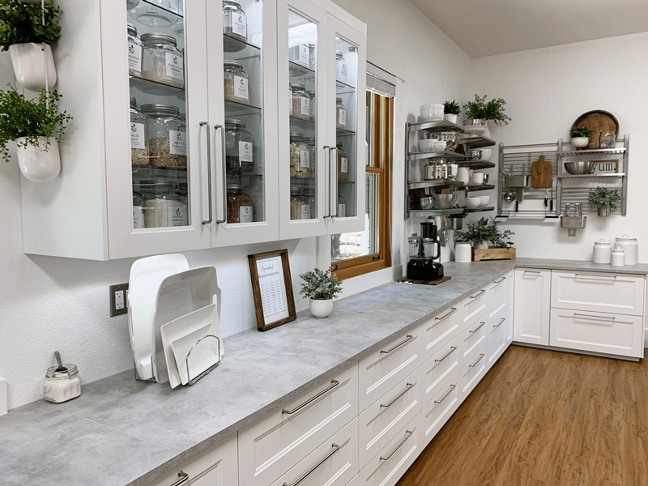
Upper Cabinets
For the upper cabinets, I selected doors with glass fronts. One section of these glass shelves is dedicated to my dry ingredients, which are housed in glass jars/containers. I positioned these above a counter that I will mainly use for mixing, blending, and food processing. I designed for this counter to run under two windows that bring me joy and sunlight. I will touch base on that later.
The other upper cabinets that flank the fridge and freezer are also made with glass fronts. I wanted glass in these because I knew that I would be displaying my catering and photography dishware in these. I filled them with white and stainless steel. Both colors are versatile for any event I am hosting, and they accentuate the beauty of the foods I create. I also love heavy ceramic bowls. It reminds me of when my Great Grandmother would stand in her kitchen with a massive ceramic bowl in the crook of her arm, resting the bowl on her hip, while briskly stirring the ingredients within it with the other hand. All while attending to the endless questions that I had as a child.
I shared above why I use stainless bowls too, but another reason is because of their crisp and smooth texture. This will sound odd, perhaps… but those textile feelings remind of being a little girl curled up in my mom’s lap. She always had gorgeous long fingernails that I greatly admired. To self-soothe myself, I would bring her hand to my mouth and brush her smooth, cool nails along my bottom lip. To this day, I find myself doing this same action (except with my own nails) when I am gazing out in space, ponding things.
So, that is why I decided to “showcase” these items in glass doors. They make smile, they warm my heart with memories, and satisfy my culinary needs. In all of the upper cabinets, Bob installed LED lighting strips inside of them, which is a beautiful feature.
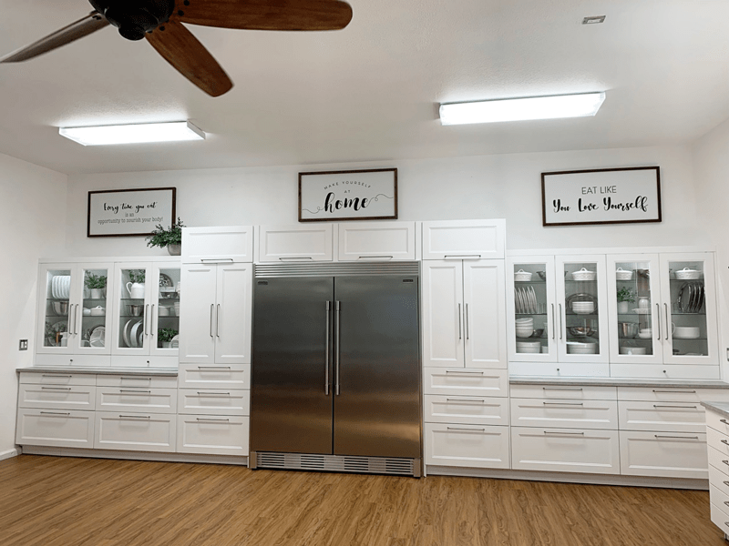
Pantry Cabinets
On the wall housing the fridge and freezer, I flanked them with 90″ tall pantry cabinets. Again, I was able to alter their design, customizing them to my needs. I put three drawers in the base of each one, side to side swing-out-doors in the center, and a door that lifts on the top. One of the side pantries is set up to house more ingredients; bottles, bags, cans… stuff you don’t want to be seen. Again, I controlled where the cabinets would be so I could avoid deep dark pockets of the Twilight Zone. The other tall pantry houses all my large party hosting decor and some appliances. I have to stop for a second to give a shout-out to my dear husband. This all couldn’t have happened without his Jack-of-ALL-trades and mathematical skills! Getting all of these cabinets/fridge/freezer/and drawers to line up perfectly is pure magic if you ask me. hehe
Drawers
I have already touched a little bit about why I went with drawers. To me, they are just flat out amazing. They are the best organization “tool” that I have yet to find in any kitchen space. I put in small (4.75″ deep ), medium (9.75″ deep ), and large drawers (14.5″ deep) throughout the space. That way, I can fit everything between a spoon to a blender in those drawers! The whole drawer thing was my saving grace in making my kitchen studio 100% functional and efficient.
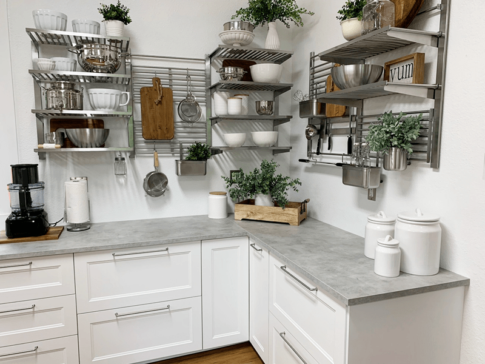
Open Shelving
This won’t always be feasible in a kitchen space due to size and aesthetics, but for my area, it was perfect. I selected an open shelving system that allowed me to display it in any configuration that I wanted! To me, it’s functional, creates efficiency, and is beautiful… all rolled into one. I presented a mixture of everyday items that I use, along with some decor items (but made sure that I didn’t get to carried away with tiny tchotchkes (knick·knack) things). Everyday items can become “art” too. The use of these shelving systems also kept the space feeling open and airy, as well as adding a balance of weight throughout the room. I used IKEA’s Kungfors system.
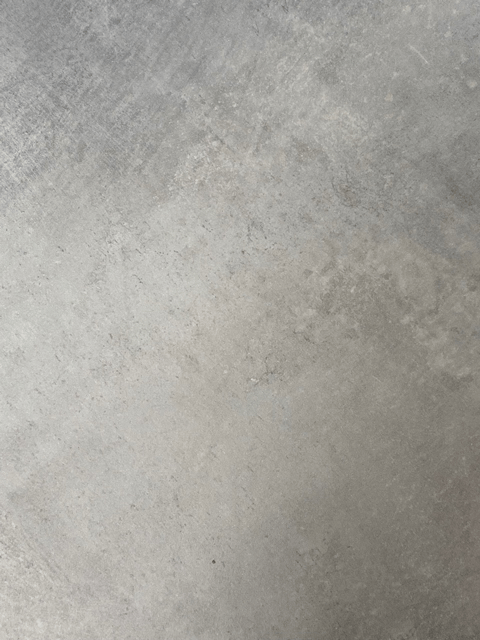
Countertops
One thing that I learned about countertops is that they can quickly break the budget. I had no idea that such surfaces could cost so darn much. :) In my original design, I selected wood countertops. I was in LOVE with the IDEA.
But after we built the first wall and placed a section of the wooden countertop on the cabinet base, my LOVE started to waiver. The pattern in the wood competed with the patterned vinyl wood plank floor, it felt too dark, and then I began to think about the maintenance of it also.
Sure, I had thought of these issues before the purchase, but I was too in love with the concept of having wooden counters that it clouded my ability to think logically. Don’t get me wrong, I think they can be gorgeous, and worth the effort BUT I was out to create a space that required little to no maintenance, I wanted my energy to be used elsewhere. So, they were returned with no questions asked.
After weighing out the cost of other types of countertops, it was decided to get laminated tops. I selected ones that give the appearance of concrete. I never thought in a million years that I would pick such a countertop, but that’s what happens when you are open-minded. Hehe
There are a lot of things to take into consideration when selecting countertops, and if it had been my central house kitchen, I would have gone a different route. I used IKEA’s EKBACKENCountertop, light gray concrete countertops. The other day I did a stain test on a scrap piece that was leftover. I poured some beet juice on it and left it sitting overnight. The next morning I wiped it up, and it didn’t leave a stain or any marking. Yay!
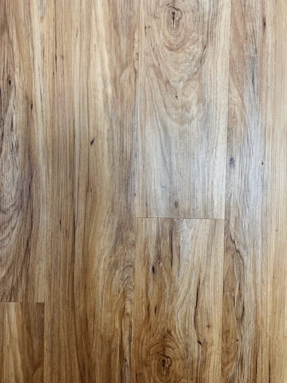
Flooring
Ah, lastly, the flooring. Oddly enough, this was one of the first things that we decided on. I mean, I had already created an overall vision of the look and feel that I wanted in this space, but this was the first thing we did. Typically, flooring is the last to go in, but in my case, this isn’t your standard kitchen space, so we laid ours first. We laid snap together vinyl plank flooring. It took Bob and me ten hours from start to finish. The laying of the flooring wasn’t the hard part; it was the selection of it that almost drove us crazy.
We looked at 100’s of samples, made several choices, but in the end; we picked something different then we thought we would. This is what I learned:
- Don’t make your selection based on tiny floor samples. Open the boxes and lay them out on the floor. We laid out several 15 square foot floorings down the isles of the hardware and flooring stores. I quickly discovered that the overall look and patterns didn’t match what was being represented in the samples. Odd color streaks, too many knots were sprinkled throughout the flooring, etc. It was an eye-opening experience.
- Durability – We all need the flooring to be durable, that’s a no-brainer, but again budget can be a significant deciding factor. We went to the middle-ground. It came with a 30-year warranty, waterproof, sound reducing pad attached, 20mil wear-layer thickness, and best of all the perfect floor for two DYI-never-laid-flooring-before people! hehe
- Don’t be afraid to ask for a discount! The flooring we selected was NOT on sale, but we asked for a discount and saved $1.00 a square foot! That was a $656 savings. Not so shabby for “just asking?!”
- We purchased our flooring locally, but (here) is a link to the brand.
Appliances
For me, this was one of the most significant game-changers. Since I was taking this space from a commercial manufacturing kitchen and repurposing it into a studio kitchen… it meant that I could move the LOUD appliances out of the area. This above everything was most important to me. Running two commercial fridges, two commercial freezers, and a commercial dehydrator in that space caused a person’s ears to go numb after a while. With the decision to relocate these items, it meant that I could select appliances that were more ear-friendly. Though I will admit, it has been a challenge to down-size these items. So, what appliances did I choose?
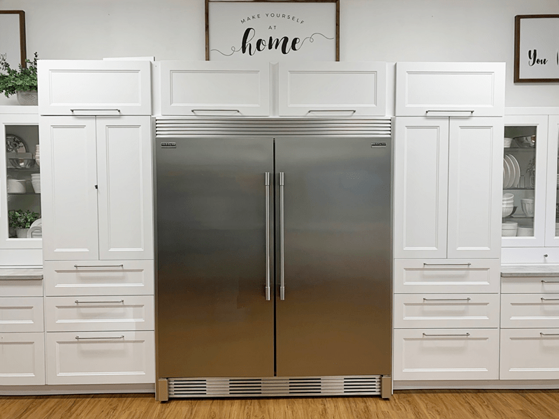
Fridge / Freezer
I went down the middle road again. I needed something larger than the standard house fridge, yet smaller and QUIETER than a commercial one. I wanted the inside of the unit to be as square and boxy as I could get. That way, the space inside would be efficient for my needs. Thank goodness, I found it! The Frigidaire Gallery 18.6 cu ft upright stainless fridge and freezer (2 units). BUT they were out of my budget. Throughout the time it took to design the kitchen, I kept looking for deals on these units. That was when I came across a deal on the local Facebook Virtual Garage Sale. I found those exact units for half the price, and they were only six months old. We also purchased a kit that tied to the two units together, making them look as one. Love it!
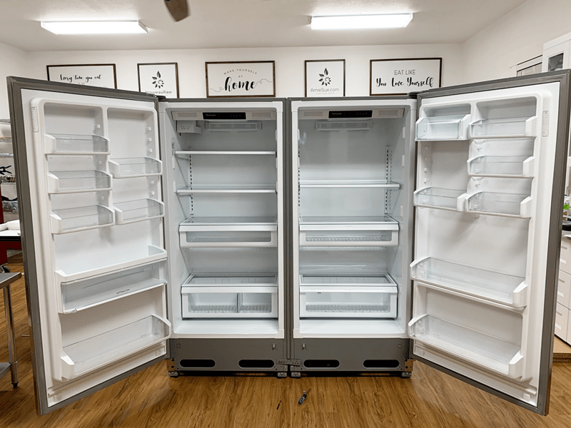
I had to share this photo because when I walked into the room, I found the fridge and freezer sitting like this. It was as though they were reaching out for a HUG. Lol, Have you hugged your refrigerator lately?
Things we didn’t know before purchasing the kit – You need the space to lay both units down to attach all the kit parts. Doing this means you need to find a place for all your fridge and freezer foods to live for 24 hours since once the units are upright, they have to be off for 24 hours before turning them back on. We were lucky; we had other fridge and freezers to put the stuff in, and we had the space to lay them down… this may not be the case for many people.
- Frigidaire Gallery 18.6 cu. ft. Freezerless Refrigerator in Stainless Steel
- Frigidaire Gallery 18.6 cu. ft. Upright Freezer in Stainless Steel
- Frigidaire Double Louvered Trim Kit – TRIMKITEZ2 (best pricing at the time)
Dehydrators
I already did a post on the Samson Silent Dehydrator, which you can read (here). Therefore, I won’t go into detail as to why I selected these units. We have yet to install these into their cabinet because we haven’t completed the remodeling job. Stay tuned for more updates on the last wall, which will house the dehydrators and a double oven. I heard your gasps. haha
Lighting and Ceiling Fan
I didn’t want to forget mentioning these two items because they were heavy hitters in my overall design as well. Air movement and lighting can make or break the layout of a space. Don’t believe me, step into a world-renowned museum that is filled with priceless, exquisite art… now turn off the airflow, feel how heavy and thick the air feels? Feel how suffocating it is to stand there? Now notice the lighting, they used light bulbs that are on the blue spectrum, and as it casts a light on the painting, it looks lifeless, dull… making it hard to immerse yourself into the mind of the artist? Ready to spend another two hours strolling through in this space? Not me said the plant-based chef. haha
Ceiling Fan
- Remember when I said that my Studio Kitchen space used to be a double car garage? Well, garages are BIG open spaces, and when designing a kitchen in such an area, it can seem cold and empty. That is why I decided to put a ceiling fan in the room.
- It physically and energetically created movement in the air.
- I selected a ceiling fan with wooden blades to add warmth and to compliment the other wood accents in the room.
- I purchased it from Home Depot – Altura DC 68 in. Indoor Matte Black Ceiling Fan with Remote Control
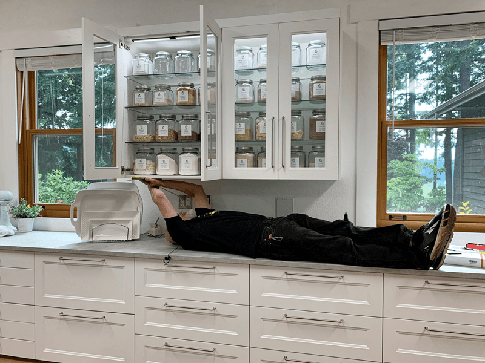
Bob… installing the under cabinet lighting while he was jibber-jabbering away on the phone with a friend. He is a Jack of ALL Trades!
Lighting
This is more of a complicated subject matter. Because lights come in different color tones called lumens and lighting can significantly affect the look and feel of a space. Since we had installed IKEA kitchen cabinets, we purchased their lighting systems. But once we installed one, we realized that it wasn’t exactly what we were looking for. Their lights have more of a yellow hue to them, which, in reality, is perfect for a typical house kitchen. But in my studio kitchen, I have fluorescent overhead lighting, which is more on the blue spectrum. Therefore I wanted the lights in my upper cabinets to match. That way, my light hues weren’t competing with one another.
Since my sweet husband has a lot of experience with lighting, I leaned on him heavily to help resolve the issue. I have heard of him refer to Kelvin Color Temperature, which as to do with color temperatures. If you wish to read more about this, which I highly recommend, if anytime you are looking to add or upgrade lighting.
(Bob here, I also matched the color temperature of the cabinet lights to the main room lights. As Amie said above, color temperature is expressed in K (Degrees Kelvin). Incandescent bulbs tend to be a warm feeling about 2700K. In this space, we wanted to have a color closer to daylight and went with 5000K. These ratings for bulbs can change the feeling of a room. Here is a link to more info about color temperature: http://www.westinghouselighting.com/color-temperature.aspx )
Bob ended up finding some through Amazon, and to sweeten the deal, they were even less expensive than IKEA. I love saving money. :) The ones he selected are lighting strips, which he installed under one set of upper cabinets as well as inside the glass cabinets.
Outside of the aesthetics of creating my studio kitchen, there are areas of practice that we always need to address. Below I will run through them… all of what I am sharing is how I finalized my design. But I am also sharing “food for thought” with you so you too can apply any or all of these ideas to your own designs.
Plan for Real Life
It would wise to spend some time with a green smoothie, a notepad, and pen… writing down what you want from your kitchen space. You have a right to ask anything about it, so now isn’t the time to get to shy. As you do this exercise, here are some thoughts to keep rattling around in your mind…
- How large is your family? Size matters.
- What is your eating style? Do you tend to share meals at the table? Do you sit around an island with stools? Do you eat on the go?
- What is your diet? And remember, diets change as our bodies and health needs change, so be open-minded.
- What else is the kitchen space used for? This may seem like a no-brainer but seriously… the kitchen is the heart of the house, and a whole lot more happens in there than just preparing food. Bill paying? Homework station? A gathering spot for family meetings? Crafting spot? Animal feeding station? Only you know what your kitchen space is capable of and what your needs are. Keep the reality of that in the forefront of your planning.
- Over-all what are your desired aesthetics and atmosphere that you want for this creative space? Bright and airy? Warm and cozy? Rustic? Modern? Eclectic? An infusion of looks and feels? Don’t follow the trends… follow your own design (heart).
- With those questions in mind remodeling or newly building, a kitchen is usually a one time deal. My suggestion is to aim for a classic simple design and timelessness. This includes flooring, countertops, cabinets, and large appliances. Adding decor, color, and simple features can be changed as your tastes change… and trust me, they will.
- As you start working on the details of what you want in the kitchen space, periodically step back and review the big picture to make sure that you are still on track to your overall vision. It’s easy to end up down a rabbit hole when you are buried in the details.
I hit you with a lot of questions for you to ponder upon. Some of the answers may come quickly, and others may take some time. Take all the time you need… this is a commitment.
First – Purge Current Kitchen
The first step to kitchen design is to purge and organize your current kitchen. That may sound silly and a waste of time, but trust me, the end result to help guide you in your design making. Why? Because this forces you to go through each item in every drawer and cabinet and decide if you REALLY want or need that item. Create sell / donate / trash boxes. After you are done purging and organizing, you will have a much better idea as to what kind of space you will need moving forward. With each item, ask yourself?
Design Your Dream Kitchen
Bob taught me this tactic early on in our relationship. Whatever you are creating in life, design your dream … then scale back to fit your budget, removing items that are the least desirable (or at least bump them to the bottom of the list), leaving you with some real treasures that make you smile. If you do this in the reverse order, it may stifle your imagination and decision making in creating a space that you don’t really enjoy or doesn’t function well. So let’s dive into how I approached the design of my studio kitchen.
Create Appliance & Kitchenware List
- Do this on paper so you can visually see what you have and what you need. So, for example, we all have silverware, and 95% of the time, we store it in a drawer.
- Some appliances live on the counter; some are better suited to being tucked away in a cabinet. Assign a home for all of the items you have. Again, it may seem silly, but trust me, building out a kitchen is a serious matter.
Small Appliances List
- What appliances will live on the countertop? If not on the counter, would it be more accessible in a cabinet or drawer? Counter space is prime real estate in a kitchen, use it wisely. If your counters as too cluttered, it may create a cluttered mind, thus making it less enjoyable to spend time in there creating delicious, nutritious foods.
- Items that you use daily are best suited for the countertop, such as; dehydrator, food processor, blender, spiralizer, etc.
Large Appliance List
- Fridge(s) – it’s not uncommon to hear of plant-based cooks to have more than one refrigerator. Will your space accommodate that, or does it go in the garage or some other spot?
- Freezer – Even if you are eating a 100% raw food diet, I would recommend a freezer. It’s a great place to store nuts and seeds since they are prone to going rancid due to their high-fat content. You can also freeze seasonal fruits and veggies so you can enjoy them throughout the year. Plus, if you are into making smoothies, frozen bananas and berries are perfect for those. I also like to make raw cheesecakes, cakes, cookies, crackers, cereals, and granolas in advance… these can all be frozen.
- The Oven- even when I was 100% raw foodie, I used an oven for cooking for others. Some people get rid of their stoves when they adopt a raw diet, thinking they will always eat 100% raw… but we have to remember that our kitchen doesn’t dictate our diet and nutritional needs; our bodies do. So if you are thinking of NOT having an oven or stove, be sure you give it some SERIOUS THOUGHT, especially if you permanently remove the space that one could live in.
Everyday kitchen things to think about:
-
Sinks- think outside of the norm. Do you need 1 or 2 sink cavities? If you use a dishwasher regularly, a large, one cavity sink might a great option. Will your space fit a more significant than usual sink so you can wash dehydrator trays with ease? I kept my commercial sink in the kitchen studio because it allows me to wash large items; cambros, dehydrator trays, etc. Plus, I saved money in not needing to replace it.
-
Food Prep Stations – In your design planning, create food prep stations. For example, Food processor station, surround your food processor (whether in cabinets, drawers, and/or countertop) keep complimenting tools nearby; bowls, measuring cups and spoons, spatulas, etc. Create these stations based on your eating style. For plant-based chefs this might look like: Food Processing Station, Blending Station, Dehydrating Station, Food Prep Cutting Station, Plating Station.
Organization is the key to staying motivated, creative, and functional!
With your list of needs in hand, it’s time to start designing. I thought I was going to have to do this in my head. That overwhelmed me, so I tried to hand draw my space… that turned into a bad looking cartoon. Lol, We then found out that IKEA offered (for free) a 3-D Kitchen Building Program. Even if you plan to go a different route, you could use their program to plug in measurements, cabinets, etc. to get a visual.
I am 100% a visual person… meaning I need to SEE things. I FEEL a space within me, but I can’t see it. That goes for everything I do in life. I hope that makes sense. So having this 3-D tool was a game-changer for me. It gave me my vision in 3-D from all sorts of angles, and it kept a running tally of what we were spending. Before knowing they offered this, we spent quite some time researching different cabinet companies, and in the end, we decided on IKEA. At first, Bob was against it. Still, after I did TONS of research, blog reading, review reports, and then actually going and physically inspecting their kitchen products, we felt that we were getting good quality as well as a reasonable price!
Ok, if you made it to the end of this post… I curtsy and applaud you! I didn’t mean for it to be this long, but details are important when planning such spaces. I hope you found this helpful. If you are thinking, dreaming, planning, or currently in the midst of a remodel… remember that YOU CAN DO IT! Bob and I just jumped in and tackled this project. We approached each step with grace and ease, we never had a crossword with one another, we listened to each other’s thoughts and suggestions… and we had fun! There is nothing more rewarding then walking out of the studio kitchen, turning around, and saying, “Wow! We built this!”
If you have any further questions or want more details on a topic, let me know. Stay tuned for the progression of this space! More to come! blessings, amie sue
© AmieSue.com